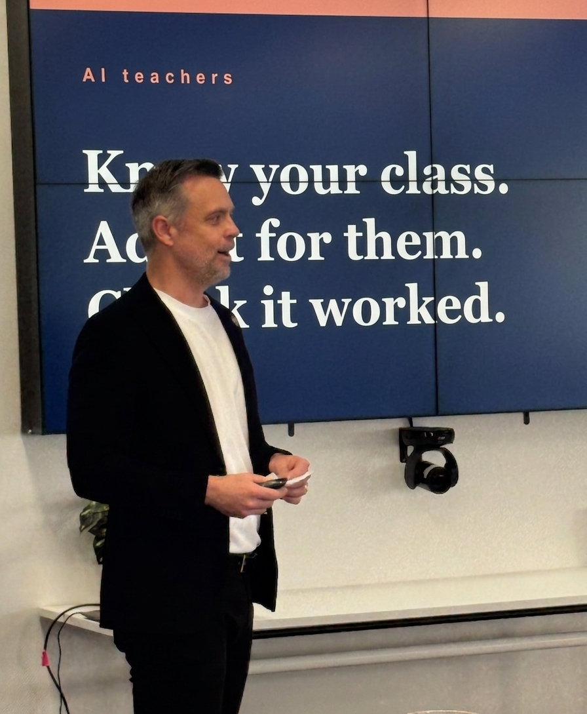

AI integration, leadership development, pedagogy, inclusion support, and wellbeing, grounded in 15 years of teaching and school leadership across WA.
A structured program delivered across one school term. Not tool training, but capability building that lasts after I leave and stays relevant as the technology changes.

Your leadership team gets calibrated on where AI actually is, where it's heading, and what it means for your school. This builds shared language and shared understanding: the foundation for informed policy and everything that follows.
Practical AI workflows your teachers can use on Monday morning: planning, feedback, assessment design, communication, admin. Staff walk away with time already saved within the session. This is what makes AI adoption stick.
Where AI genuinely supports every learner, including students with learning differences, EAL/D students, and those from disadvantaged backgrounds. Equity and engagement built into AI implementation from day one, not bolted on later.
Using AI to support administrative processes, operations, and deeper understanding of your student community. Insights that are genuinely actionable and support student outcomes at a whole-school level.
Working with a staff cohort over a semester (four sessions) to build custom AI tools specific to your school's context. I hand over the capability for your team to keep developing after I leave. Not dependency, but ownership.
Working with teachers to build confidence and capacity to teach students how to use AI appropriately. Drawing on the latest research worldwide. One of the most important conversations schools can have right now.
Working with your leadership team to develop or review your school's AI policy, grounded in practical reality, not just compliance. Policy your staff will actually understand and use.
A free diagnostic across five dimensions of AI readiness that takes around 15 minutes. You'll know where your school sits and what to prioritise, whether you work with me or not. Ask about this when you get in touch.
Wherever you are in your leadership career, the challenges are different. I've spent 15 years in schools, including senior leadership, and worked alongside leaders at every stage. Here's how I can support your growth.
For teachers ready to take their first leadership role: building the confidence, capability, and mindset to lead well from day one. Understanding what leadership actually looks like from the inside, before you're in it.
For HODs, coordinators, SLCs, and year coordinators navigating the challenge of leading peers and managing up. Building team culture, coaching practice, curriculum leadership, and managing competing priorities without burning out.
For associate principals and principals working on strategic vision, school culture, and organisational change. Support for the decisions that define a school, and the personal sustainability of the people making them.
A structured, year-long program that prepares classroom teachers for their first middle leadership role. Built on a simple principle: know yourself before you lead others.
HBDI thinking-preference profiling with a confidential 1:1 debrief, then a full-day Leading Self workshop: values clarification, stress patterns, and self-awareness as the foundation of leadership.
360-degree feedback from colleagues with a 1:1 debrief, then a full-day Leading Others workshop: coaching conversations, building trust, clear communication, and leading through change.
Designed for small cohorts (6–10) so every participant gets genuine 1:1 support. Each participant finishes with an individual action plan and evidence aligned to AITSL standards. Delivered by an HBDI-certified practitioner and adapted to your school's context.
Beyond the Aspirant Leaders Program, leadership development is shaped entirely around the individual and their school context. The work emerges from a conversation about where you are and where you want to go.
Improving teaching practice is the most reliable way to improve student outcomes. I work with schools to embed high-impact, evidence-informed strategies into everyday practice, not just on PD days.
Evidence-informed practices that make a measurable difference to student learning: explicit teaching, formative assessment, targeted feedback, and more. Embedded in your school's context, not delivered as generic training.
Assessment that actually informs teaching, not just data for data's sake. Working with teams to design tasks and feedback cycles that drive genuine improvement in student understanding and achievement.
Supporting teachers and curriculum teams to plan units and sequences that are coherent, appropriately differentiated, and aligned to school-wide priorities. Less reinventing the wheel, more shared expertise.
Working alongside teachers in their practice. Not just observing and evaluating, but coaching. Building reflective practitioners who improve continuously, not just during performance review cycles.
The conditions for learning matter as much as the content. Supporting teachers to build inclusive, purposeful, well-managed classrooms where every student can engage and succeed.
Building professional development programs for your school that actually change practice: structured, purposeful, and embedded in your real context and priorities. Not another one-off day.
I lead every program with inclusion at the centre. Building schools that genuinely serve every learner is work I'm deeply committed to, not as compliance, but as a design principle.
Embedding UDL principles into school practice: designing learning environments and tasks that work for every student from the start, not through retrofitted accommodations.
Supporting schools to genuinely include students with learning difficulties, disabilities, and additional needs, moving beyond compliance paperwork to real educational practice that serves these students.
Building teacher and school capacity to support English as an Additional Language or Dialect students: language acquisition, access to curriculum, and genuine participation in school life.
Equity-centred practice that addresses the real barriers facing students from disadvantaged backgrounds, without deficit thinking, and with genuine belief in every student's capacity to succeed.
Supporting schools to build culturally responsive approaches that honour students' backgrounds and identities, and create genuine belonging for students from all communities.
When AI is part of the conversation, inclusion isn't negotiable. Building AI approaches that serve the students who need the most support, not just those who are already advantaged.
Staff wellbeing and student wellbeing are connected. When one suffers, so does the other. I help schools build sustainable approaches to wellbeing that work within real school constraints.
Building school cultures where staff feel valued, supported, and sustainable in their roles. Moving beyond wellbeing days to structural approaches that reduce teacher burnout and build genuine collective efficacy.
Supporting schools to implement student wellbeing programs that are evidence-informed, culturally responsive, and integrated into the daily life of the school, not just tacked on as a separate initiative.
Building school-wide approaches to behaviour and relationships that are restorative rather than punitive: repairing harm, rebuilding relationships, and creating safer and more connected school communities.
Supporting teachers and school leaders to understand and respond to trauma in students, building classrooms and schools that feel safe for students whose home lives are difficult or unpredictable.
Building teacher confidence to recognise and respond to student mental health concerns. Not as clinicians, but as caring professionals who know how to connect students with the right support.
School-wide approaches to behaviour that are consistent, fair, and effective for all students, moving beyond reactive responses to proactive systems that prevent issues before they escalate.
Investment is always discussed in an initial conversation and shaped to your school's size, context, and what you're trying to achieve. There's no fixed pricing page because one size doesn't fit all schools.
I work with schools of all sizes, and I'm committed to making this accessible. If you're not sure whether it's within reach, get in touch and we'll figure out what makes sense.
The first conversation is always free.
Tell me about your school and we'll work it out together. No obligation.
james@empoweredschools.com.au